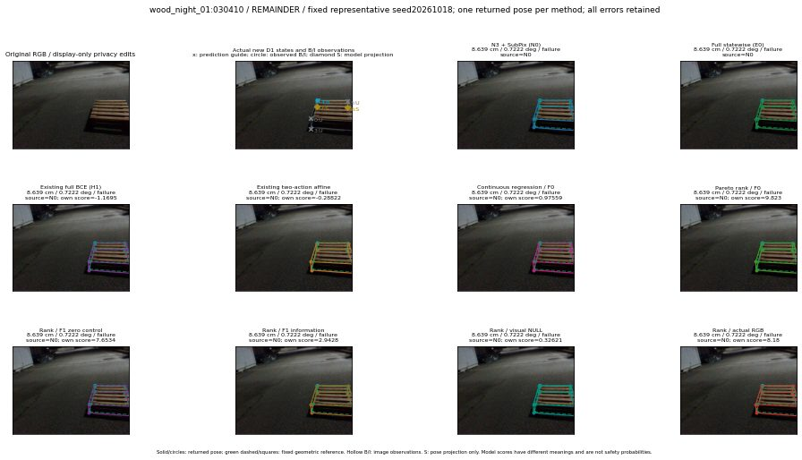

실선은 반환 자세, 초록 점선은 고정 기하 참조입니다. S는 영상 관측이 아닙니다. 점수는 모델별 의미가 다르며 보정된 안전 확률이 아닙니다. 개인정보 처리는 표시 사본에만 적용했습니다.
| 방법·seed | 위치 / 회전 / 공동성공 | 실제 출처 | 선택 후보 | 각 모델 자체 점수 |
|---|---|---|---|---|
| N0 | 8.639 cm / 0.7222 deg / failure | N0 | N/A | N/A |
| E0 | 8.639 cm / 0.7222 deg / failure | N0 | N/A | N/A |
| E0_REGENERATED | 8.639 cm / 0.7222 deg / failure | N0 | E0_REGENERATED | N/A |
| POSEFIX_SUBPIX_PF_ANCHOR | 7.072 cm / 1.369 deg / failure | OTHER | N/A | N/A |
| POSEFIX_SUBPIX_YOLO_ANCHOR | 7.072 cm / 1.369 deg / failure | OTHER | N/A | N/A |
| D1_H1_MLP_s20261018 | 8.639 cm / 0.7222 deg / failure | N0 | N0 | -1.169523000717163 |
| D1_H1_MLP_s20261019 | 8.639 cm / 0.7222 deg / failure | N0 | N0 | -1.1359540224075317 |
| D1_H1_MLP_s20261020 | 8.639 cm / 0.7222 deg / failure | N0 | N0 | -0.9130499362945557 |
| D1_H1_PAIR_MLP_s20261018 | 8.639 cm / 0.7222 deg / failure | N0 | N0 | -0.5882484316825867 |
| D1_H1_PAIR_MLP_s20261019 | 8.639 cm / 0.7222 deg / failure | N0 | N0 | -0.8344494104385376 |
| D1_H1_PAIR_MLP_s20261020 | 8.639 cm / 0.7222 deg / failure | N0 | N0 | -0.6969974040985107 |
| D1_H1_PAIR_ROLE_AFFINE_s20261018 | 8.639 cm / 0.7222 deg / failure | N0 | N0 | -0.2882162034511566 |
| D1_H1_PAIR_ROLE_AFFINE_s20261019 | 8.639 cm / 0.7222 deg / failure | N0 | N0 | -0.4574381709098816 |
| D1_H1_PAIR_ROLE_AFFINE_s20261020 | 8.639 cm / 0.7222 deg / failure | N0 | N0 | -0.27130448818206787 |
| R_CONT_F0_s20261018 | 8.639 cm / 0.7222 deg / failure | N0 | N0 | 0.9755862951278687 |
| R_CONT_F0_s20261019 | 8.639 cm / 0.7222 deg / failure | N0 | N0 | 0.8441622853279114 |
| R_CONT_F0_s20261020 | 8.639 cm / 0.7222 deg / failure | N0 | N0 | 0.7558729648590088 |
| R_ORDER_F0_s20261018 | 8.639 cm / 0.7222 deg / failure | N0 | N0 | 9.822968482971191 |
| R_ORDER_F0_s20261019 | 8.639 cm / 0.7222 deg / failure | N0 | N0 | 0.8494853973388672 |
| R_ORDER_F0_s20261020 | 8.639 cm / 0.7222 deg / failure | N0 | N0 | -14.007702827453613 |
| R_ORDER_F1_ZERO_s20261018 | 8.639 cm / 0.7222 deg / failure | N0 | N0 | 7.653406620025635 |
| R_ORDER_F1_ZERO_s20261019 | 8.639 cm / 0.7222 deg / failure | N0 | N0 | 1.634133219718933 |
| R_ORDER_F1_ZERO_s20261020 | 8.639 cm / 0.7222 deg / failure | N0 | N0 | 4.289101600646973 |
| R_ORDER_F1_s20261018 | 8.639 cm / 0.7222 deg / failure | N0 | N0 | 2.94282865524292 |
| R_ORDER_F1_s20261019 | 8.639 cm / 0.7222 deg / failure | N0 | N0 | 4.6374735832214355 |
| R_ORDER_F1_s20261020 | 8.639 cm / 0.7222 deg / failure | N0 | N0 | 8.220151901245117 |
| V_ORDER_NULL_s20261018 | 8.639 cm / 0.7222 deg / failure | N0 | N0 | 0.32621002197265625 |
| V_ORDER_NULL_s20261019 | 8.639 cm / 0.7222 deg / failure | N0 | N0 | 1.203988790512085 |
| V_ORDER_NULL_s20261020 | 8.639 cm / 0.7222 deg / failure | N0 | N0 | 2.171199083328247 |
| V_ORDER_RGB_s20261018 | 8.639 cm / 0.7222 deg / failure | N0 | N0 | 8.180049896240234 |
| V_ORDER_RGB_s20261019 | 8.639 cm / 0.7222 deg / failure | N0 | N0 | 0.83967524766922 |
| V_ORDER_RGB_s20261020 | 8.639 cm / 0.7222 deg / failure | N0 | N0 | -6.081138610839844 |